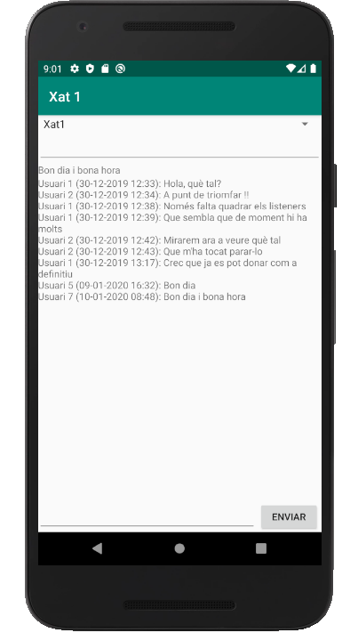

Bases de Dades
4.3.3 CF-Android: Tot l'exemple
Anem a posar tot l'exemple del xat complet, això sí, amb algunes modificacions i millores:
- Tindrem la classe Missatge amb les propietat nom i contingut. Posarem també la data (com un Date, aprofitant que també tenim aquest tipus en Cloud Firestore) per a poder ordenar els missatges cronològicament
- Llevem les coses que no s'utilitzen estrictament en aquest exemple
- El Spinner anomenat comboXats ara ja funcionarà. Per a no modificar les coses ja fetes, posarem la creació dels listeners en un mètode anomenat inicialitzar() que per a tocar el menys possible estarà dins del listener de detectar els canvis en el Spinner, ja que ara els altres listeners dependran del xat triat. I haurem d'anar amb compte també de parar els listeners, ja creats. És a dir, si primer triem un xat, tindrem els listeners que apunten a ell. Si després triem un altre xat i creem els listeners una altra vegada per a que apunten al lloc correcte, els tindrem per duplicat. Hauríem de parar els primers listeners
Classe Missatge
class Missatge(val nom: String, val data: Date, val contingut: String)
I el programa (hem incorporat la classe Missatge per més comoditat):
import androidx.appcompat.app.AppCompatActivity
import android.os.Bundle
import android.widget.*
import com.google.firebase.firestore.DocumentChange
import com.google.firebase.firestore.ListenerRegistration
import com.google.firebase.firestore.ktx.firestore
import com.google.firebase.ktx.Firebase
import java.text.SimpleDateFormat
import java.util.*
import kotlinx.android.synthetic.main.activity_main.*
class Missatge(val nom: String, val data: Date, val contingut: String)
class MainActivity : AppCompatActivity() {
var listenerUltimMissatge: ListenerRegistration? = null
var listenerMissatges: ListenerRegistration? = null
override fun onCreate(savedInstanceState: Bundle?) {
super.onCreate(savedInstanceState)
setContentView(R.layout.activity_main)
boto.text = "Enviar"
val pantPrincipal = this
// Referències a la Base de Dades i als documents
val db = Firebase.firestore
var docRef = db.collection("Xats").document("XatProva")
// Exemple de llegir tots els documents d'una col·lecció
// Per a triar el xat
db.collection("Xats").get().addOnCompleteListener { task ->
if (task.isSuccessful) {
val opcions = ArrayList<String>()
for (document in task.result!!) {
opcions.add(document.id)
}
val adaptador = ArrayAdapter(pantPrincipal, android.R.layout.simple_spinner_item, opcions)
adaptador.setDropDownViewResource(android.R.layout.simple_spinner_dropdown_item)
comboXats.adapter = adaptador
}
}
comboXats.onItemSelectedListener = object:AdapterView.OnItemSelectedListener {
override fun onItemSelected(parent: AdapterView<*>?, view: android.view.View?, position: Int, id: Long) {
// TODO Auto-generated method stub
docRef = db.collection("Xats").document(comboXats.selectedItem.toString())
area.text = ""
inicialitzar()
}
override fun onNothingSelected(p0: AdapterView<*>?) {
TODO("Not yet implemented")
}
private fun inicialitzar() {
// Exemple de lectura única: AddOnSuccessListener()
// Per a posar el títol. Sobre /Xats/XatProva/nomXat
docRef.get().addOnSuccessListener { documentSnapshot ->
setTitle(documentSnapshot.getString("nomXat"))
}
// Exemple de listener de lectura contínua addSnapshotListener() sobre un document
// Per a posar l'últim missatge registrat. Sobre /Xats/XatProva/ultimMissatge
// Si estava en marxa, el parem abans de tornar-lo a llançar
if (listenerUltimMissatge != null)
listenerUltimMissatge!!.remove()
listenerUltimMissatge = docRef.addSnapshotListener { documentSnapshot, e ->
ultim.text = documentSnapshot!!.getString("ultimMissatge")
}
// Exemple de listener de lectura contínua addSnapshotListener() sobre una col·lecció
// Per a posar tota la llista de missatges. Sobre /Xats/XatProva/missatges
// Si estava en marxa, el parem abans de tornar-lo a llançar
if (listenerMissatges != null)
listenerMissatges!!.remove()
listenerMissatges = docRef.collection("missatges").orderBy("data").addSnapshotListener { snapshots, e ->
for (dc in snapshots!!.documentChanges) {
when (dc.type) {
DocumentChange.Type.ADDED -> {
val sdf = SimpleDateFormat("dd-MM-yyyy HH:mm")
val dataFormatejada = sdf.format(dc.document.getDate("data"))
area.append(dc.document.getString("nom") + " (" + dataFormatejada + "): " + dc.document.getString("contingut") + "\n")
}
else -> {}
}
}
}
// Per a guardar dades
// Primer sobre /Xats/XatProva/ultimUsuari i /Xats/XatProva/ultimMissatge
// Després també com a documents en la col·lecció /Xats/XatProva/missatges
boto.setOnClickListener {
val dades = HashMap<String, Any>()
dades["ultimUsuari"] = usuari.text.toString()
dades["ultimMissatge"] = text.text.toString()
docRef.update(dades)
val m = Missatge(usuari.text.toString(), Date(), text.text.toString())
docRef.collection("missatges").add(m)
text.setText("")
}
}
}
}
}No apareixeran el missatges sense data.
I el resultat és el de la imatge, en la qual es veu el contingut del xat Xat1, amb uns quant misstges ja

Llicenciat sota la Llicència Creative Commons Reconeixement NoComercial SenseObraDerivada 4.0